Works

おててカート
制作時期: 2024年12月〜2025年1月
制作時間: 25時間
使用技術: Python, Numba
概要: Pythonを用いた擬似3D（Mode7）設計のレーシングゲーム。性能の異なる4種類のキャラクターと4つのコースが実装されており、タイムアタックを楽しむことができます。Pythonの実行速度面の課題を克服するため、NumbaライブラリによるJIT（実行時）コンパイルを活用し、リアルタイム処理における安定したフレームレートを実現しました。


Cps Counter
制作時期: 2025年2月
制作時間: 11時間
使用技術: Python, Tkinter
概要: マウスクリックの秒間回数（CPS: Click Per Second）を正確に計測・可視化するためのGUIアプリケーション。計測結果のグラフ化機能に加え、クリック時の波紋エフェクトなどの視覚的なフィードバックを取り入れ、心地よい操作体験を提供します。


mkworld-wr-app
制作時期: 2025年7月
制作時間: 15時間
使用技術: Python, Flask, BeautifulSoup
概要: マリオカートワールド（MKW）のタイムアタックの記録を閲覧・分析できるWebアプリ。外部サイト「mkwrs.com」からスクレイピングしたデータを基に、世界記録の一覧表示、コース別履歴、国別・プレイヤー別のランキング表示、記録の比較・フィルタリング機能を提供します。
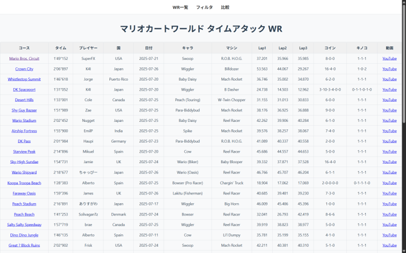
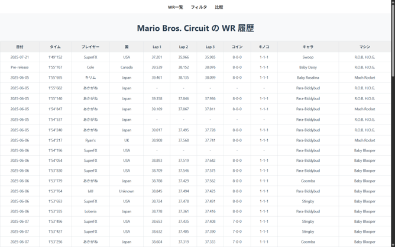
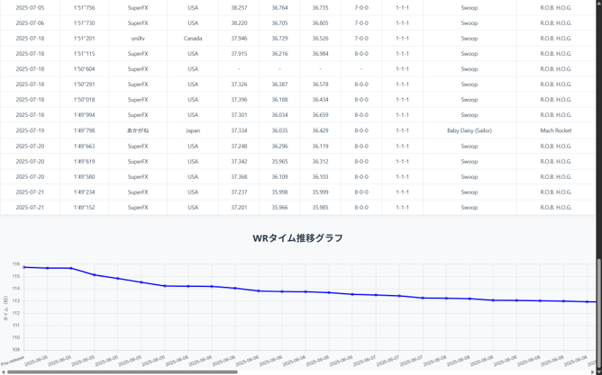
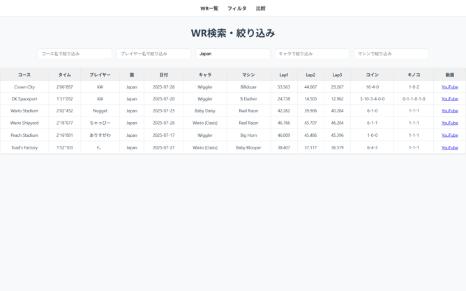
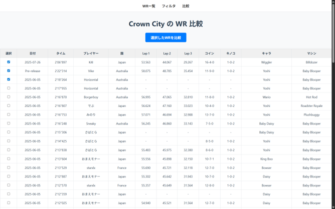
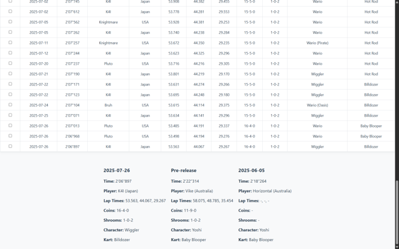
js-dom-event-tutorial
制作時期: 2025年7月
制作時間: 30時間
使用技術: HTML, CSS, JavaScript, CodeMirror
概要: JavaScriptのDOM操作とイベントリスナー（EventListener）の基礎を学ぶ構成の実践的なチュートリアル。DOMの基礎知識、要素の操作・追加・削除などを解説し、実際のデモを通して学習できます。CodeMirrorライブラリを組み込んでおり、ブラウザ上で直接コードを編集・即時実行して動作を確認できるインタラクティブな環境を実現しました。
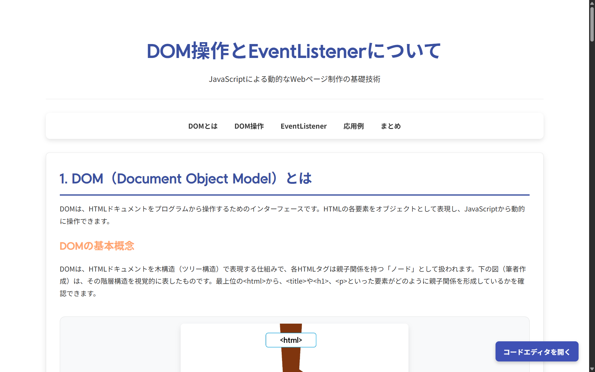
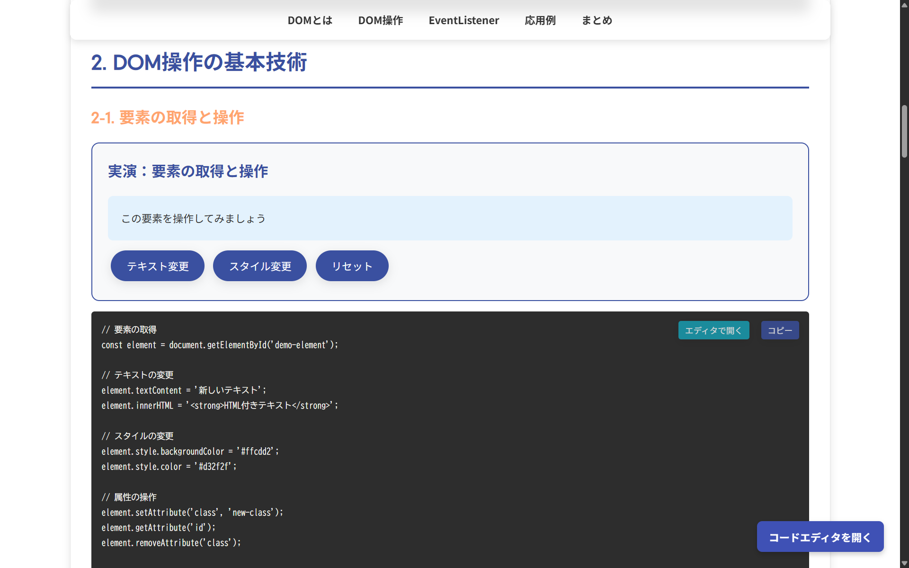
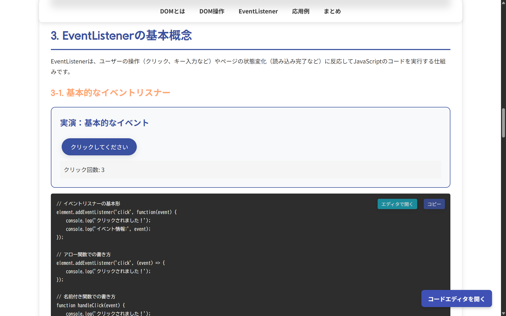
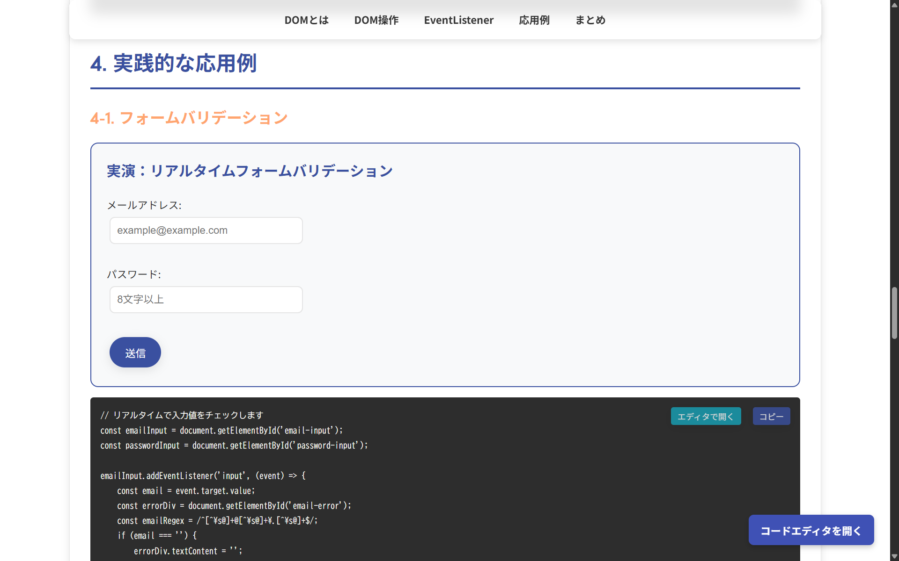
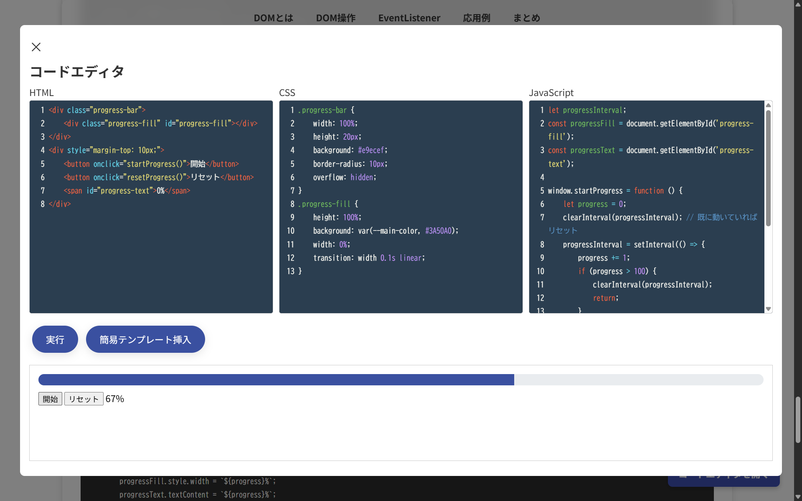
pid_visualization
制作時期: 2025年8月
制作時間: 3時間
使用技術: HTML, CSS, JavaScript
概要: 制御工学における「PID制御」および「カスケード制御」の挙動を、ブラウザ上で視覚的に比較・学習できるシミュレーター。P（比例）、I（積分）、D（微分）の各ゲインをスライダーで直感的に調整し、目標値への追従性やオーバーシュートの変化をリアルタイムにグラフ化し、制御手法ごとの違いを検証できます。
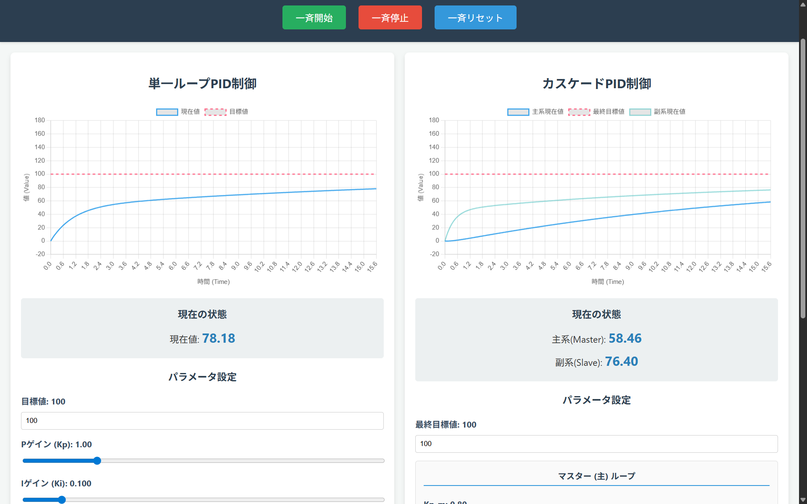
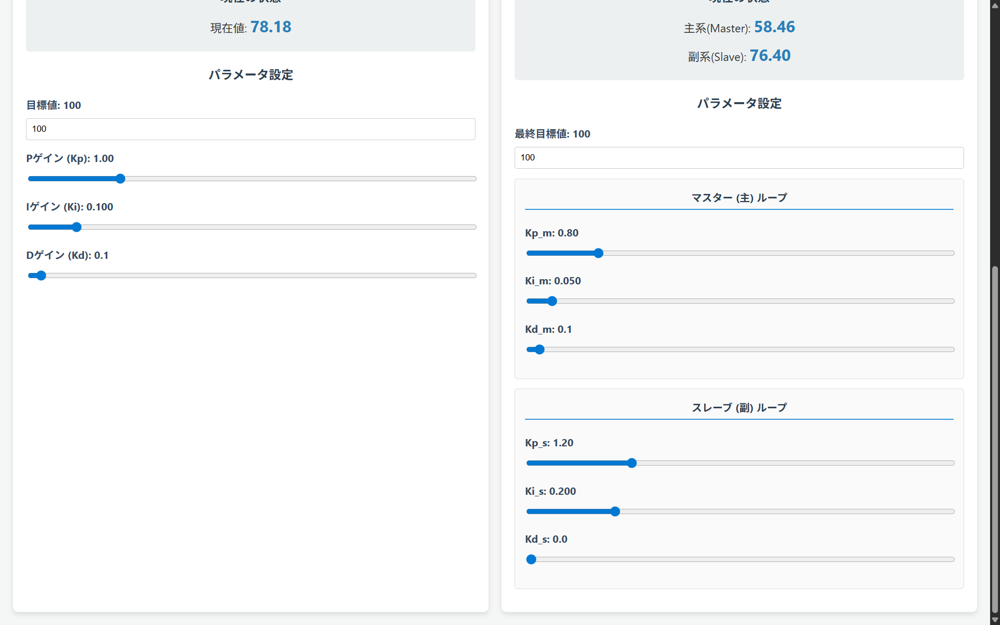
2025fes_admin_gui
制作時期: 2025年10月〜11月
制作時間: 10時間
使用技術: HTML, CSS, JavaScript, html5-qrcode
概要: 2025年の高専祭において、展示企画のスタッフが参加者の進捗やステータスをリアルタイムで管理・更新するために開発した運用ツール（GUI）。参加者に配布したID・パスワードでの手動認証に加え、html5-qrcodeライブラリを用いたカメラでのQRコード読み取り認証にも対応し、混雑時のスムーズな対応を実現しました。
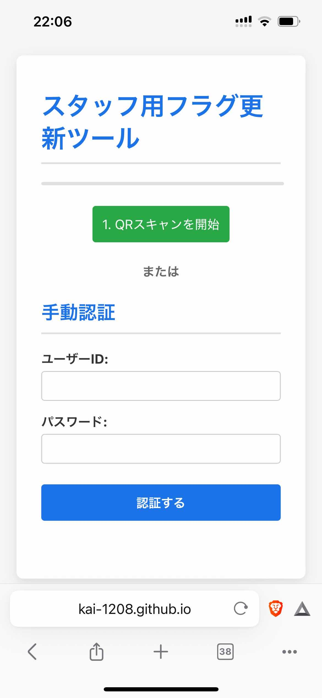
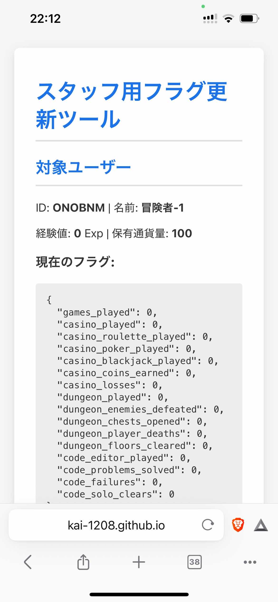
2025fes_api
制作時期: 2025年10月〜11月
制作時間: 40時間
使用技術: Node.js, Express, MongoDB, Docker
概要: 高専祭の展示企画向けに開発した受付・認証システム用バックエンドAPI。参加者ごとの一意なQRコードを生成し、受付時の読み取りによってステータス状態を一元管理します。Dockerコンテナ上に構築したNode.jsサーバーをngrok経由で外部公開し、さらにMongoDBを連携させることでセキュアかつ可用性の高い運用基盤を整備しました。
mc-todo-app
制作時期: 2025年11月
制作時間: 25時間
使用技術: React, TypeScript, Tailwind CSS
概要: 「複雑なタスク管理をゲームのように楽しく」のコンセプトで開発した、Minecraft風のTodoアプリケーション。タスクを重要度に応じて土・石・鉄・黒曜石などのブロックとして視覚化しました。タスク完了時には実際のゲームと同様の破壊アニメーションとパーティクルが発生するインタラクションを作り込みました。LocalStorageを用いた状態保存や、インベントリ画面風の完了タスク一覧機能も備えています。
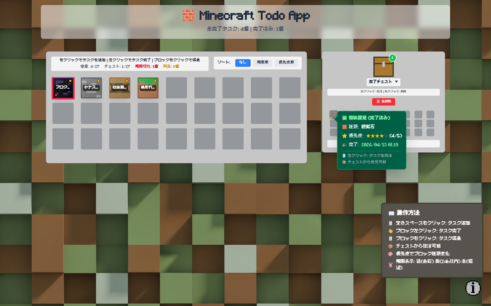
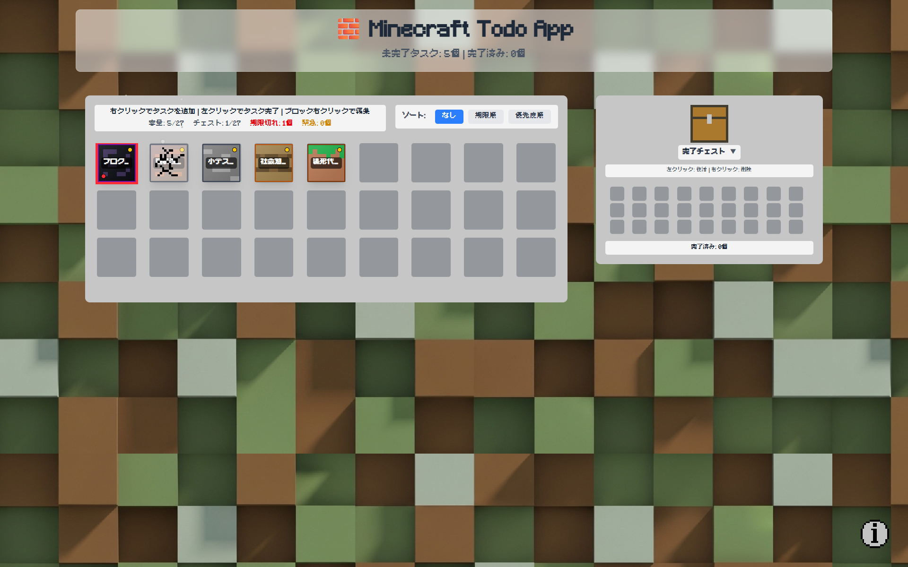
card_game_app
制作時期: 2026年1月〜2月
制作時間: 15時間
使用技術: HTML, CSS, JavaScript, VOICEVOX
概要: 現実空間に配置したQRコードをスマートフォンのカメラで読み取って遊ぶ、デジタルとリアルを融合した参加型「神経衰弱」アプリ。インストール不要のブラウザで完結し、プレイヤーは歩き回ってコードを探しスキャンすることでカードをめくります。人数に合わせてQRコードの生成・印刷ができ、スキャン成功時にはVOICEVOXによるキャラクター音声が再生されるなど、プレイを盛り上げる工夫を取り入れています。
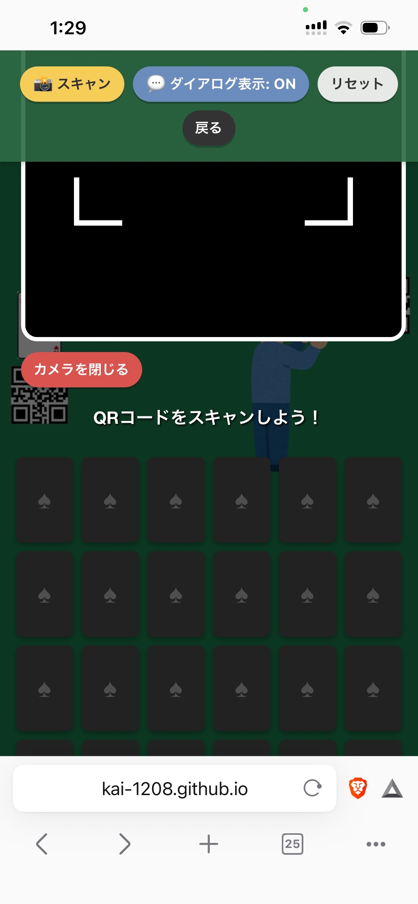
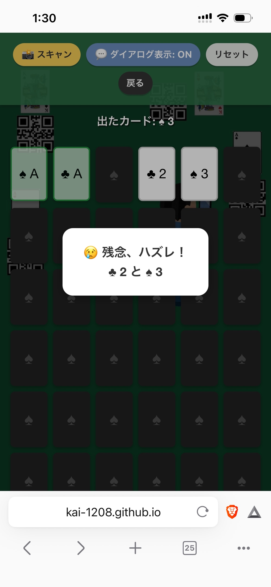
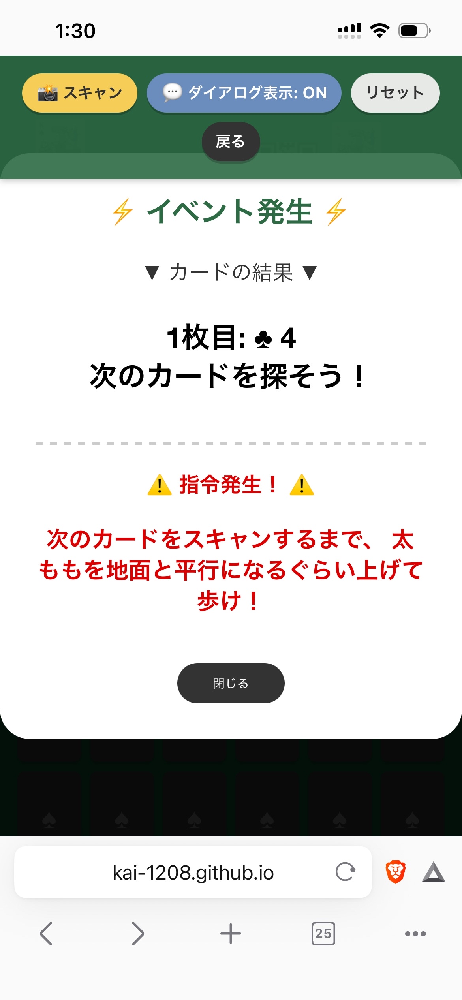
live-voting-app
制作時期: 2026年1月〜2月
制作時間: 40時間
使用技術: Next.js, Supabase
概要: 「誰がいつ投票したか」を可視化し、投票行為そのものを楽しむ体験（UX）に焦点を当てたリアルタイム投票プラットフォーム。SupabaseのRealtime機能を活用し、他者の投票がリロードなしで即座に画面へ反映されます。投票時に流れ星や花火などのエフェクトが発生して一体感を演出するほか、ソート・検索機能も充実させました。PWAに対応し、スマートフォンからアプリ感覚で手軽にアクセスできます。
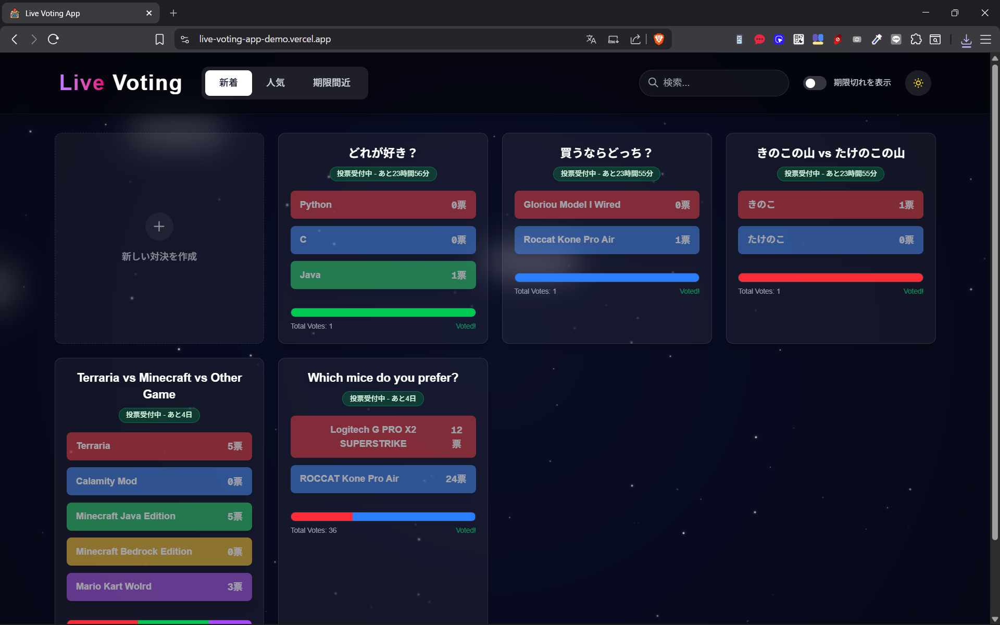
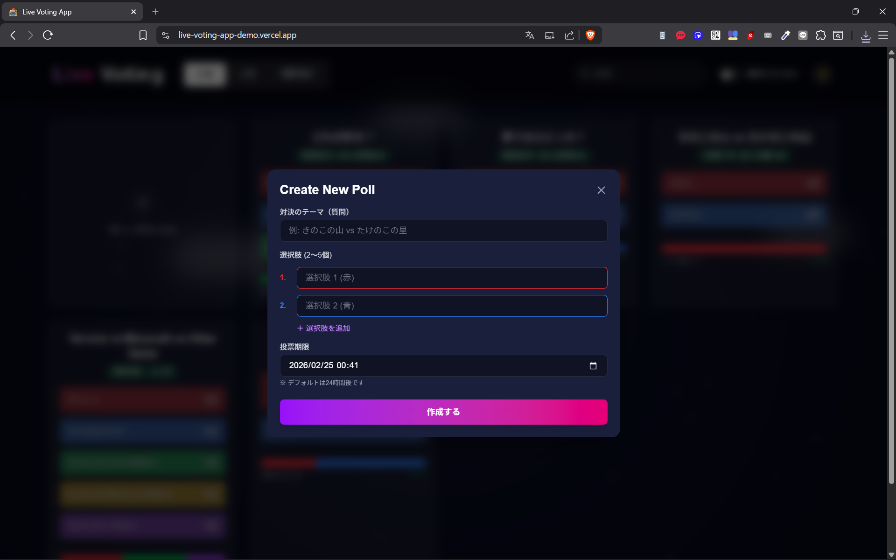
image-cropping-app
制作時期: 2026年3月
制作時間: 2時間
使用技術: Python, Tkinter
概要: 複数の画像を一括でトリミングして保存するためのデスクトップアプリケーション。Tkinterを用いたGUIで直感的に切り抜き範囲を指定でき、A4サイズやハガキサイズなど特定のアスペクト比に枠を固定することも可能です。指定した切り抜き枠を複数の画像に一括適用し、個別の画像ファイルや単一のPDFファイルとして効率よくまとめて出力できます。
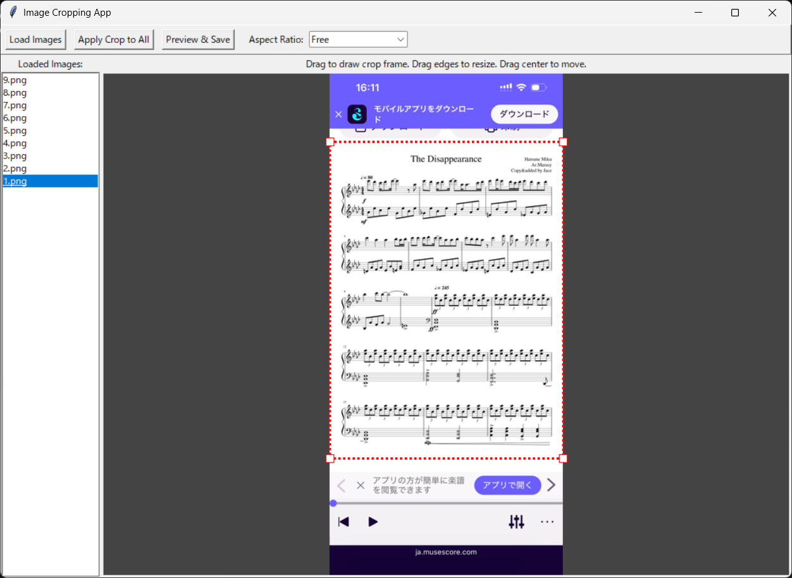
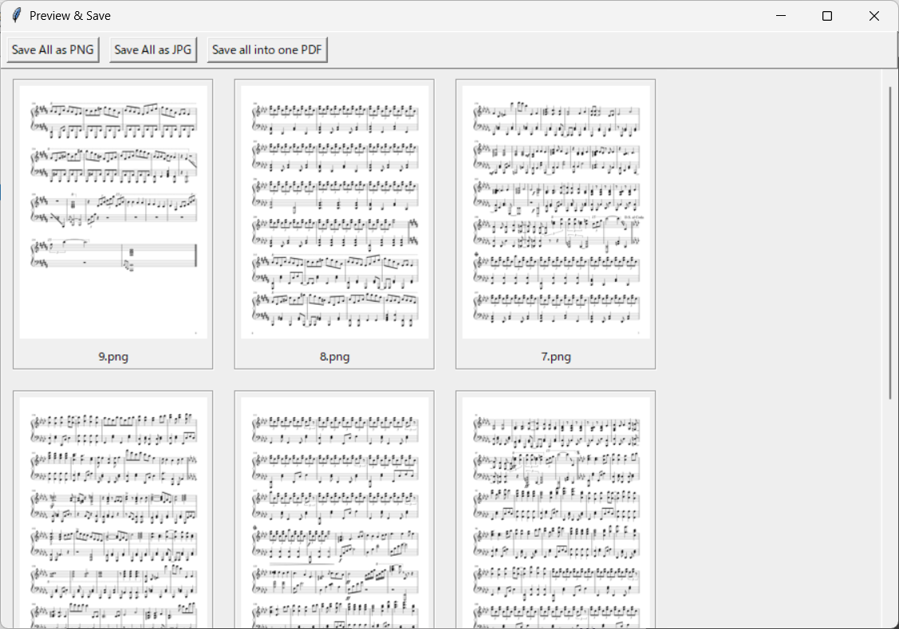
FlashPhrase
制作時期: 2026年3月
制作時間: 15時間
使用技術: HTML, CSS, JavaScript
概要: 英単語や英会話フレーズを効果的に学習するためのWebアプリケーション。次々とパラパラめくられるフラッシュカードを素早く確認して記憶への定着を図る「Word Mode」と、学習内容の理解度を確認できる「Test Mode」を切り替えて利用できます。初期データとして、頻出の英単語とフレーズがそれぞれ1000語ずつ収録されています。
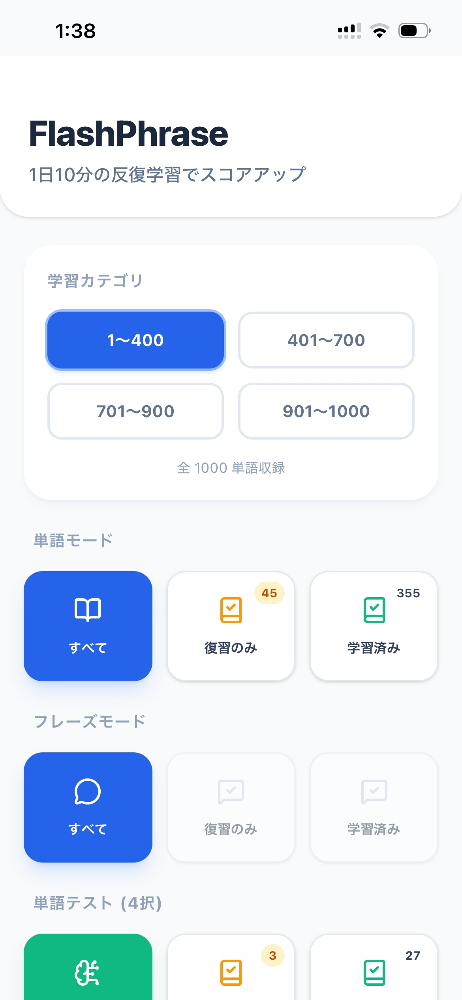
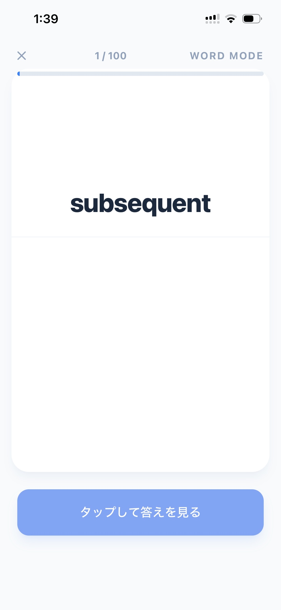
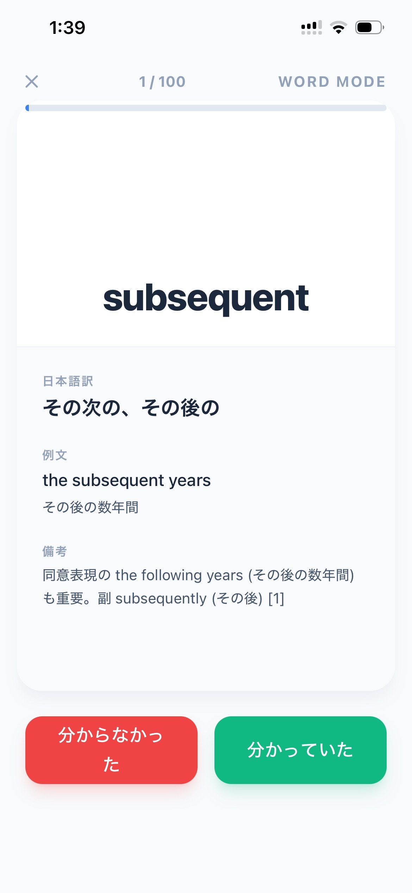
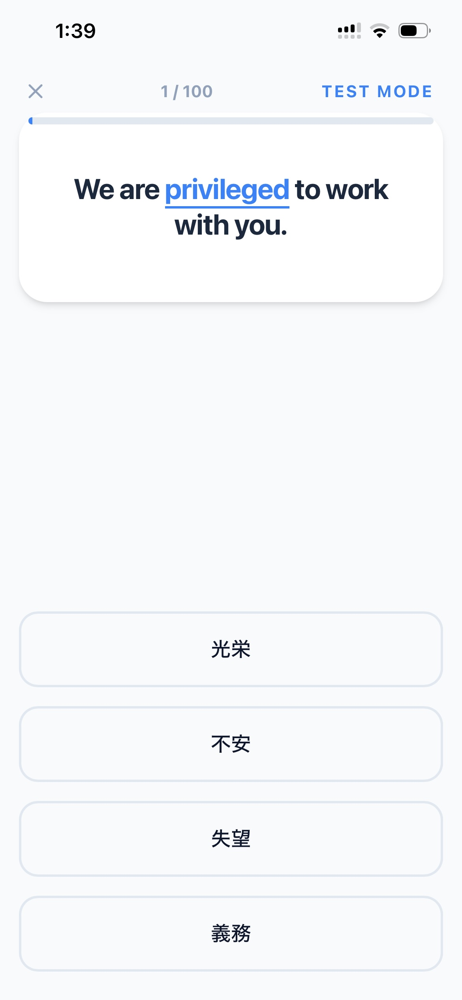